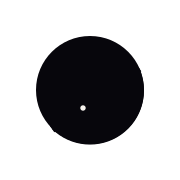
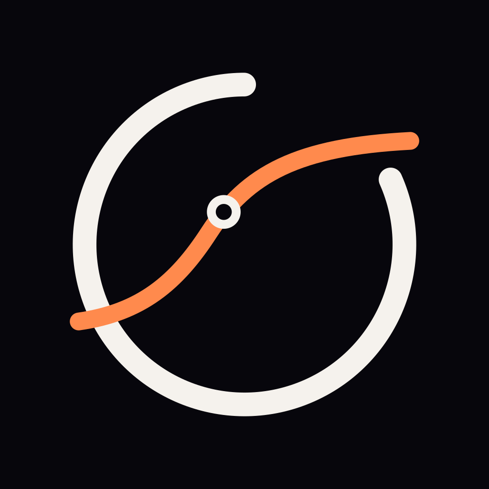

01 / Primary scale ladder
16—256 px16
24
60
120
256
Trajectory aperture / production proof
One aperture. One flight trace. One measured intersection. This board tests recognition before effects, campaign imagery or interface chrome can help it.
01 / Primary scale ladder
16—256 px02 / Micro mark
Detail reduced
Dark / 24
Light / 2403 / One-color variants
No effects04 / Wordmark lockup
Outlined master
05 / Native masks
Production PNG / grayscale pair